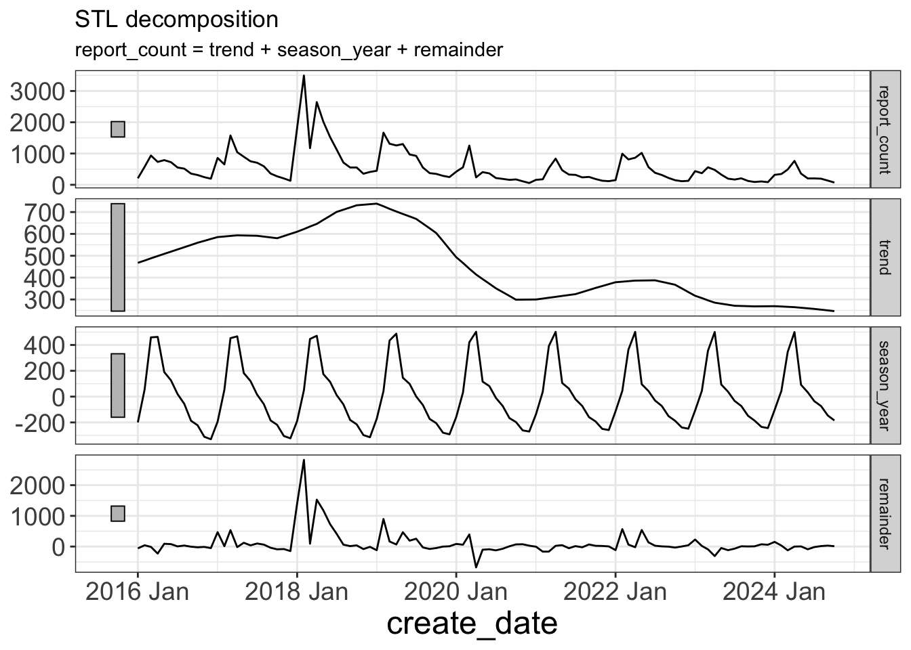

library(fpp3)
library(readr)
library(janitor)
library(future)
library(hrbrthemes)
library(forcats)
library(broom)
library(ggrepel)
custom_theme <- theme_bw() +
theme(axis.text = element_text(size = 14),
axis.title = element_text(size = 18))
theme_set(custom_theme)
plan(multisession)
options(scipen = 999, digits = 4)
set.seed(1234)This material was presented at Code & Supply on 2024-11-07
Time Series Forecasting in R
What is time series forecasting?
Time series forecasting is the practice of making predictions about the future value of some quantitative variable.
Predictive accuracy is typically the focus, not inference for understanding underlying causes.
What is a time series?
Data collected about a quantitative variable sequentially over time.
Customer demand for a company’s product
Electricity usage
Stock price
Network latency
Pothole reports
What is a time series
tsibbledata::vic_elec |>
as_tibble() |>
mutate(day = date(Time)) |>
group_by(day) |>
summarize(max_demand = max(Demand)) |>
as_tsibble(index = day) |>
autoplot() +
labs(title = "Peak daily electricity demand in Victoria, Australia",
y = "Peak demand (MWh)",
x = "Date") +
scale_y_continuous(labels = scales::comma_format())What can be forecasted?
Key questions:
Do we understand the underlying process that creates the time series (data generating process)?
Is historical data is available?
Will the future be similar to the past?
Will the forecast affect the thing we are trying to forecast?
- Feedback loop
What can be forecasted?
Feedback loops AKA “efficient market hypothesis”
“How much will it rain tomorrow”
vs.
“How much rain will fall on you tomorrow”
Why forecast?
Knowing more about the future means we can make better decisions today.
Typically related to resource allocation.
Forecast horizons
Short term
- What will the peak demand for electricity be in the next hour?
Medium term
- What will customer demand for flowers be next Valentine’s Day?
Long term
- What will future demand for a company’s products be given changing population trends across geography?
How?
Typical regression model
Pothole reports as a function of explanatory variables
pothole_reports ~ year + month + weather + public_works_budget + errorTime series model
Future value of pothole complaints as a function of the previous values of pothole complaints (plus explanatory variables)
pothole_reports(t+1) ~ pothole_reports(t) + pothole_reports(t-1) + ... + errorWhy use time series models?
Time series models can typically handle autocorrelation in the data.
pothole_reports(t)andpothole_reports(t-1)are correlatedThis can cause correlated error in regression models
Forecasting Process
Exploratory data analysis
Model selection
Forecast
Evaluate forecast accuracy
Code walkthrough
311 data from Western Pennsylvania Regional Data Center
#read in pothole data
#https://data.wprdc.org/datastore/dump/29462525-62a6-45bf-9b5e-ad2e1c06348d
report_data <- read_csv("post_data/wprdc_311_2024_10_20.csv") |>
clean_names() |>
mutate(create_date = yearmonth(create_date_et)) |>
rename(request_type = request_type_name)Data structure
Time series table data structure:
Key:
request_typeIndex:
create_dateMeasured variable:
report_count
#create basic tsibble
pothole_df <- report_data |>
filter(request_type == "Potholes") |>
summarize(report_count = n(),
.by = c(create_date, request_type)) |>
ungroup() |>
filter(year(create_date) >= 2016) |>
as_tsibble(key = request_type, index = create_date)
pothole_df# A tsibble: 106 x 3 [1M]
# Key: request_type [1]
create_date request_type report_count
<mth> <chr> <int>
1 2016 Jan Potholes 208
2 2016 Feb Potholes 574
3 2016 Mar Potholes 936
4 2016 Apr Potholes 732
5 2016 May Potholes 789
6 2016 Jun Potholes 723
7 2016 Jul Potholes 554
8 2016 Aug Potholes 516
9 2016 Sep Potholes 357
10 2016 Oct Potholes 313
# ℹ 96 more rowsExploratory data analysis
autoplot(pothole_df)
Exploratory data analysis
Seasonal plot shows each year across months
gg_season(pothole_df)Exploratory data analysis
Seasonal subseries plot shows each month across years
gg_subseries(pothole_df) +
facet_wrap(vars(month(create_date, label = TRUE)), ncol = 3)Exploratory data analysis
Time series decomposition
dcmp <- pothole_df |>
model(stl = STL(report_count, robust = TRUE))
dcmp_components <- components(dcmp)
autoplot(dcmp_components)
Exploratory data analysis
Outliers
outliers <- dcmp_components |>
filter(remainder < quantile(remainder, 0.25) - 3*IQR(remainder) |
remainder > quantile(remainder, 0.75) + 3*IQR(remainder))
pothole_df |>
ggplot(aes(create_date, report_count)) +
geom_line() +
geom_point(data = outliers, color = "red")Train/test split
You always want to validate a model’s performance with data it hasn’t seen already. This analysis uses the last 20% of observations as test data.
data_test <- pothole_df |>
slice_tail(prop = .2)
data_train <- pothole_df |>
anti_join(data_test, by = "create_date")Model types
NAIVE: play the last value forward over the forecast horizon
SNAIVE: play the last seasonal value forward
MEAN: take the average of the entire series and play it forward
- Use
window()to apply a window for rolling averages
- Use
Model types
TSLM*: fit a linear model along the
trend()- Use
seasonal()to add dummy variables for seasonal effects
- Use
ETS: exponential smoothing
- Use a weighted average based on the recency of the observations
ARIMA*: Autoregressive Integrated Moving Average
fable::ARIMAautomatically determines optimal model parameters (PDQ, seasonal PDQ)AKA “autoarima”
You can also manually set these
More available in
{fable}
* These models can use exogenous variables to capture additional information
Notes
ARIMA:
P: number of autoregressive terms
D: number of differences required to make it stationary
Q: number of lagged forecast errors
Fit models
Fit models on training data
model_df <- data_train |>
model(naive = NAIVE(log(report_count + 1)),
naive_seasonal = SNAIVE(log(report_count + 1)),
mean = MEAN(log(report_count + 1)),
mean_moving_6 = MEAN(log(report_count + 1), window = 6),
lm = TSLM(log(report_count + 1) ~ trend()),
lm_seasonal = TSLM(log(report_count + 1) ~ trend() + season()),
arima = ARIMA(log(report_count + 1)),
ets = ETS(log(report_count + 1)))Transformations of target variable are automatically reversed in fable::forecast
Fit models
glimpse(model_df)Rows: 1
Columns: 9
Key: request_type [1]
$ request_type <chr> "Potholes"
$ naive <model> [NAIVE]
$ naive_seasonal <model> [SNAIVE]
$ mean <model> [MEAN]
$ mean_moving_6 <model> [MEAN]
$ lm <model> [TSLM]
$ lm_seasonal <model> [TSLM]
$ arima <model> [ARIMA(1,0,2)(2,1,0)[12]]
$ ets <model> [ETS(M,N,A)]Model summary
Inspect model
model_df |>
select(arima) |>
report()Series: report_count
Model: ARIMA(1,0,2)(2,1,0)[12]
Transformation: log(report_count + 1)
Coefficients:
ar1 ma1 ma2 sar1 sar2
0.9608 -0.3667 -0.2622 -0.6048 -0.7281
s.e. 0.0360 0.1566 0.1544 0.0931 0.0953
sigma^2 estimated as 0.1867: log likelihood=-49.7
AIC=111.4 AICc=112.7 BIC=125.1Evaluate fit on training data
Plot forecast vs. training data
model_df |>
select(ets) |>
augment() |>
ggplot(aes(x = create_date)) +
geom_line(aes(y = report_count, color = "observed"), lwd = 1) +
geom_line(aes(y = .fitted, color = "prediction"), lwd = 1) +
scale_color_manual(values = c("observed" = "black", "prediction" = "orange")) +
labs(title = "ETS model",
color = NULL) +
theme(legend.text = element_text(size = 16))Forecast on test data
Make forecast from fit models onto test data
pothole_fc <- forecast(model_df, data_test)pothole_fc# A fable: 168 x 5 [1M]
# Key: request_type, .model [8]
request_type .model create_date report_count .mean
<chr> <chr> <mth> <dist> <dbl>
1 Potholes naive 2023 Feb t(N(6.1, 0.39)) 521.
2 Potholes naive 2023 Mar t(N(6.1, 0.77)) 606.
3 Potholes naive 2023 Apr t(N(6.1, 1.2)) 690.
4 Potholes naive 2023 May t(N(6.1, 1.5)) 774.
5 Potholes naive 2023 Jun t(N(6.1, 1.9)) 859.
6 Potholes naive 2023 Jul t(N(6.1, 2.3)) 943.
7 Potholes naive 2023 Aug t(N(6.1, 2.7)) 1027.
8 Potholes naive 2023 Sep t(N(6.1, 3.1)) 1112.
9 Potholes naive 2023 Oct t(N(6.1, 3.5)) 1196.
10 Potholes naive 2023 Nov t(N(6.1, 3.9)) 1280.
# ℹ 158 more rowsAccuracy
Accuracy metrics
Root Mean Squared Error (RMSE)
- On average, how far off the forecast is from the actual observed value
Continuous Ranked Probability Score (CRPS)
Measures how well the forecast distribution fits the test data
“skill” measures CRPS compared to a naive benchmark model
Others available in
{fabletools}
Forecast accuracy
Evaluate forecast accuracy based on full time series
fc_acc <- pothole_fc |>
accuracy(pothole_df,
measures = list(point_accuracy_measures,
distribution_accuracy_measures,
skill_crps = skill_score(CRPS))) |>
rename(rmse = RMSE) |>
select(request_type, .model, .type, skill_crps, rmse) |>
arrange(desc(skill_crps))Forecast accuracy
fc_acc# A tibble: 8 × 5
request_type .model .type skill_crps rmse
<chr> <chr> <chr> <dbl> <dbl>
1 Potholes lm_seasonal Test 0.689 162.
2 Potholes arima Test 0.635 206.
3 Potholes lm Test 0.596 175.
4 Potholes ets Test 0.305 377.
5 Potholes mean Test 0.253 384.
6 Potholes mean_moving_6 Test 0.253 384.
7 Potholes naive_seasonal Test 0.129 595.
8 Potholes naive Test -1.01 1231.Plot forecast
Plot forecast vs. test data
model_acc <- fc_acc |>
pull(.model)
pothole_fc <- pothole_fc |>
mutate(.model = factor(.model, levels = model_acc))
pothole_fc |>
mutate(.model = factor(.model, levels = model_acc)) |>
filter(.model %in% model_acc[1:3]) |>
autoplot(data = pothole_df |> filter(year(create_date) >= 2021)) +
facet_wrap(vars(.model), ncol = 1) +
guides(fill_ramp = "none",
fill = "none",
color = "none") +
labs(title = "Forecasts of top 3 models",
subtitle = "Sorted descending by accuracy") +
theme(strip.text = element_text(size = 14))Refit and forecast
Refit top model on entire time series and make a true 12 month forecast
final_model <- pothole_df |>
model(lm_seasonal = TSLM(log(report_count + 1) ~ trend() + season()))
final_model |>
forecast(h = 12) |>
autoplot(pothole_df |> filter(year(create_date) >= 2021)) +
labs(title = "Final 12 month forecast of pothole reports",
x = "Report create date",
y = "Report count")
fable::forecast automatically builds out a new dataframe of the specified horizon with the trend() and season() variables
References
Material adapted from Forecasting: Principles and Practice (3rd ed) by Rob J Hyndman and George Athanasopoulos
Questions?
Appendix
Autocorrelation
Values of report_count are correlated across time
ACF(pothole_df) |>
autoplot()Autocorrelation
Partial autocorrelation measures correlation between gapped lags of report_count, accounting for the relationship between the intermediate lags
PACF(pothole_df) |>
autoplot()Cross-validation
Create multiple train/test sets with rolling origins
pothole_cv <- stretch_tsibble(pothole_df, .step = 6, .init = 24)pothole_cv# A tsibble: 882 x 4 [1M]
# Key: .id, request_type [14]
create_date request_type report_count .id
<mth> <chr> <int> <int>
1 2016 Jan Potholes 208 1
2 2016 Feb Potholes 574 1
3 2016 Mar Potholes 936 1
4 2016 Apr Potholes 732 1
5 2016 May Potholes 789 1
6 2016 Jun Potholes 723 1
7 2016 Jul Potholes 554 1
8 2016 Aug Potholes 516 1
9 2016 Sep Potholes 357 1
10 2016 Oct Potholes 313 1
# ℹ 872 more rowsCross-validation

Time series features
report_df <- report_data |>
summarize(report_count = n(),
.by = c(create_date, request_type)) |>
ungroup() |>
filter(year(create_date) >= 2016) |>
as_tsibble(key = request_type, index = create_date)top_request_type <- report_df |>
as_tibble() |>
summarize(report_count = sum(report_count),
.by = c(request_type)) |>
slice_max(n = 12, order_by = report_count)
report_df_top12 <- report_df |>
semi_join(top_request_type, by = "request_type")
report_df_top12 |>
mutate(request_type = fct_reorder(request_type, report_count, sum, .desc = TRUE)) |>
autoplot() +
facet_wrap(vars(request_type), scales = "free_y") +
guides(color = "none") +
theme(axis.text.x = element_text(size = 6))
Time series features
report_features <- report_df_top12 |>
features(report_count, feature_set(pkgs = "feasts"))
report_features |>
slice_head(n = 1) |>
glimpse()Rows: 1
Columns: 49
$ request_type <chr> "Abandoned Vehicle (parked on street)"
$ trend_strength <dbl> 0.3949
$ seasonal_strength_year <dbl> 0.3865
$ seasonal_peak_year <dbl> 8
$ seasonal_trough_year <dbl> 0
$ spikiness <dbl> 2158
$ linearity <dbl> 160.7
$ curvature <dbl> -42.04
$ stl_e_acf1 <dbl> 0.1834
$ stl_e_acf10 <dbl> 0.1054
$ acf1 <dbl> 0.5248
$ acf10 <dbl> 0.4291
$ diff1_acf1 <dbl> -0.2125
$ diff1_acf10 <dbl> 0.07291
$ diff2_acf1 <dbl> -0.5601
$ diff2_acf10 <dbl> 0.3479
$ season_acf1 <dbl> 0.0387
$ pacf5 <dbl> 0.2901
$ diff1_pacf5 <dbl> 0.1979
$ diff2_pacf5 <dbl> 0.6507
$ season_pacf <dbl> -0.1747
$ zero_run_mean <dbl> 0
$ nonzero_squared_cv <dbl> 0.06562
$ zero_start_prop <dbl> 0
$ zero_end_prop <dbl> 0
$ lambda_guerrero <dbl> -0.8999
$ kpss_stat <dbl> 0.4661
$ kpss_pvalue <dbl> 0.04931
$ pp_stat <dbl> -5.633
$ pp_pvalue <dbl> 0.01
$ ndiffs <int> 1
$ nsdiffs <int> 0
$ bp_stat <dbl> 29.19
$ bp_pvalue <dbl> 0.00000006553
$ lb_stat <dbl> 30.03
$ lb_pvalue <dbl> 0.00000004261
$ var_tiled_var <dbl> 1.133
$ var_tiled_mean <dbl> 0.2935
$ shift_level_max <dbl> 109.2
$ shift_level_index <dbl> 63
$ shift_var_max <dbl> 11807
$ shift_var_index <dbl> 70
$ shift_kl_max <dbl> 6.258
$ shift_kl_index <dbl> 69
$ spectral_entropy <dbl> 0.927
$ n_crossing_points <int> 40
$ longest_flat_spot <int> 5
$ coef_hurst <dbl> 0.9206
$ stat_arch_lm <dbl> 0.1287Time series features
Principal Component Analysis
pcs <- report_features |>
select(-request_type, -contains("zero")) |>
prcomp(scale = TRUE) |>
augment(report_features)
pcs |>
ggplot(aes(x = .fittedPC1, y = .fittedPC2, col = request_type)) +
geom_point() +
geom_label_repel(aes(label = request_type)) +
scale_x_continuous(expand = expansion(mult = c(.2, .2))) +
scale_y_continuous(expand = expansion(mult = c(.2, .2))) +
theme(aspect.ratio = 1) +
guides(color = "none")